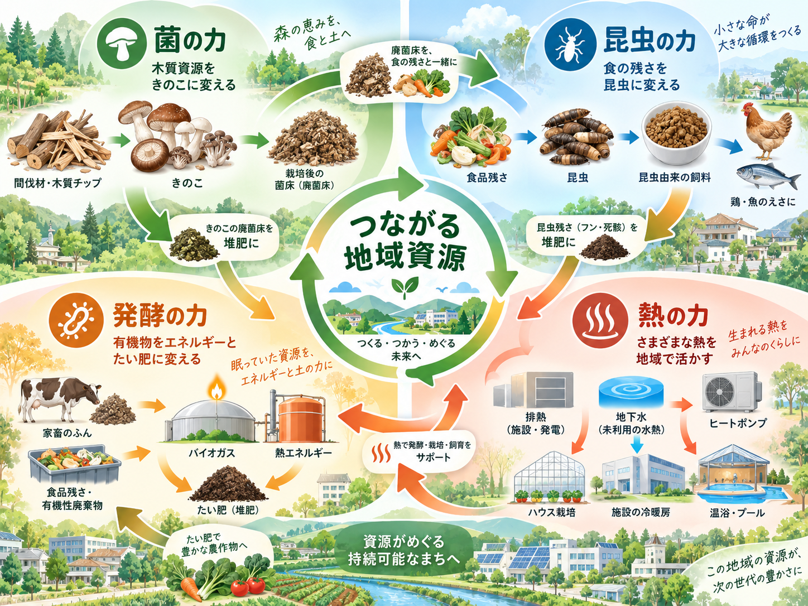
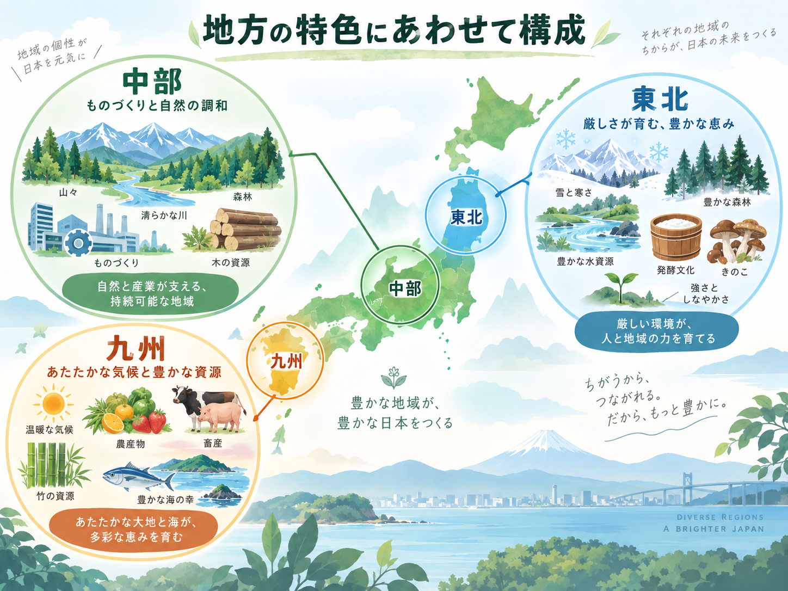

1
地域の課題
人口減少、産業縮小、外部依存が進む一方で、地域内には十分に活用されていない資源や場所、人材が残っています。
外から新しい産業を持ってくるだけではなく、地域内にすでにある資源・人・設備・場所を見直し、地域の中に新しい取引、仕事、価値を生み出すことを目指します。
人口減少、産業縮小、外部依存が進む一方で、地域内には十分に活用されていない資源や場所、人材が残っています。
木くず、竹、食品残さ、家畜ふん尿、低温排熱、地下水、遊休施設などを「使い道が限られていた資源」として捉え直します。
菌、昆虫、発酵、ヒートポンプなどを使い、そのままでは使いにくいものを次の産業が使える形へ変えます。
地域内で使えるものは地域内へ。高付加価値化したものや余剰資源は地域外へ。もの・エネルギー・人のつながりを広げます。
地域資源は物質だけではありません。自然条件、熱、水、人、設備、場所、地域産業の知識も含めて、その地域が持つもの全体を対象にします。
木くず、おが粉、竹、農業残さ、食品残さ、おから、米ぬか、廃菌床、家畜ふん尿など。
工場排熱、発酵熱、地下水、河川水、湧水、冬季冷熱、雪、地中熱、温泉熱など。
空き施設、遊休工場、倉庫、廃トンネル、既存設備、地域の技術者、農林水産業の経験など。
技術そのものを目的にするのではなく、地域資源に次の受け手をつくるための道具として使います。
木質や有機物を分解・改質し、キノコ生産や次工程で使いやすい状態へ変えます。
例木質 → キノコ / 菌処理木質 / 発酵原料
食品残さなどをタンパク質・脂質を含む生物資源へ変え、飼料原料などへつなぎます。
例食品残さ → 昆虫 → 養殖・養鶏用飼料
有機物を安定化し、堆肥・肥料・バイオガス・熱など複数の価値へ変換します。
例家畜ふん尿 → 発酵 → 肥料・ガス・熱
排熱や自然熱を熱交換・ヒートポンプで利用し、生物や加工工程に適した温度環境をつくります。
例排熱・地下水 → 温度調整 → 菌・昆虫・乾燥
重く腐りやすいものは、乾燥・発酵・昆虫化などによって保存・輸送しやすい形へ。季節限定の熱や冷熱は、蓄熱・蓄冷によって利用時期をずらす。こうした変換により、地域内だけでなく他地域との連携も可能になります。

キノコ、昆虫、木質利用、排熱利用を個別に評価するだけではなく、地域全体として外部支出を減らし、どれだけ新しい価値を地域内に残せるかを重視します。
一つの巨大施設や一社ですべてを統合する必要はありません。林業、食品、畜産、農業、養殖、製造業、自治体、大学などが、それぞれの余剰と需要だけをつなぐ「緩やかな地域連携」を基本とします。
小さな接点が増えることで、地域内に新しい取引、新しい仕事、新しい関係が生まれます。
共通化するのは「地域資源を見つけ、次の産業へつなぎ、全体で評価する」という考え方です。実際の組み合わせは、その土地の気候・地形・産業・人材によって変わります。
暖かい気候、竹・杉、養鶏、養殖などを組み合わせる。
杉・ヒノキ、水、製造業排熱を組み合わせる。
冷涼な気候、森林、キノコ、畜産、発酵熱を組み合わせる。

日本は国土が狭い一方、その中に多様な自然条件と産業が凝縮されています。全国一律の正解ではなく、その違いを活かすことがこの構想の前提です。
南北に長く、温暖地から寒冷地まで異なる気候を持つ。
木質、水、冷熱、地中熱、沿岸産業などの地域資源が近接する。
地域ごとに異なる産業があり、組み合わせ方そのものが強みになる。
地域ごとに異なるモデルを試し、成功例や知見を他地域へ展開できる。
構想の背景・考え方と、個別技術の補足資料を公開しています。
地域課題、基本思想、地域全体での最適化、緩やかな地域連携、地域モデルなど、本構想の全体像をまとめた資料です。
菌、木質資源、昆虫、発酵、ヒートポンプ、自然冷熱、地熱、蓄熱・蓄冷など、技術面の考え方をまとめた資料です。
本構想へのご意見、大学・研究機関・自治体・企業等での共同検討、地域での活用についてのご連絡を歓迎します。